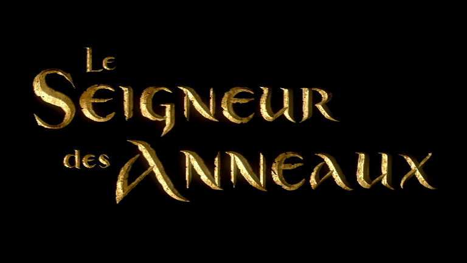

Me connaître
Qui-suis-je ? Je suis Mussio Gabin, étudiant en première année de BUT Informatique à Grenoble.
J'ai choisi d'aller en BUT Informatique car je suis passionné par l'informatique depuis mon plus jeune âge.
Mon histoire :
Il était une fois un jeune garçon qui découvrit le monde des jeux vidéo et commença à y jouer. Ce jeune garçon, c'était moi. Une quetion s'est posée à moi: "Comment sont-ils faits ?". C'est à partir de ce moment là, que je découvris le monde de l'informatique puis de la programmation. Après le dixième art, je découvris le septième : l'art du cinéma. Peter Jackson, et sa splendide trilogie "Le Seigneur des Anneaux" me fascinèrent. Je tombai amoureux de cet art qui mélange sons et images. Le cinéma me fait voyager à travers le monde. La découverte de tous ces milieux m'a fait prendre conscience de mon environnement et m'a donné l'envie de découvrir ma région. Ainsi j'ai commencé par marcher autour de chez moi, autour du village puis j'ai commencé à faire des randonnées.
Ma passion pour l'univers de TOLKIEN
Comment j'ai découvert cet univers, c'est très simple un jour "Le Le Seigneur des Anneaux" passa à la télévision et j'ai tout de suite aimé cet univers. L'un des aspects les plus remarquables de l'univers de Tolkien est son attention aux détails. Chaque peuple, qu'il s'agisse des Elfes, des Nains, des Hommes ou des Hobbits, possède sa propre histoire, sa propre langue et ses propres coutumes. Tolkien a développé des langues complètes pour ces races, donnant ainsi une profondeur et une crédibilité à son univers. En plus de son souci du détail, Tolkien a également réussi à créer une mythologie riche et authentique. Son univers regorge de légendes anciennes, de récits épiques et de contes populaires. Ces histoires nous transportent dans un monde de magie, de héros et de quêtes épiques. On retrouve ces mythes et legendes dans plusieurs de ses livres tels que "Le Silmarion" ou encore "Contes et légendes inachevés". Un autre aspect remarquable de l'univers de Tolkien est sa profondeur émotionnelle. Ses personnages sont vivants, complexes et profondément humains. De Frodon Sacquet, le courageux porteur de l'Anneau, à Aragorn, le roi guerrier, en passant par Gandalf, le sage magicien, chaque personnage est doté d'une personnalité unique et d'une histoire fascinante. Les relations entre les personnages, leurs luttes internes et leurs triomphes nous touchent et nous font réfléchir sur la nature de l'amitié, du courage et du sacrifice. Enfin, l'univers de Tolkien est imprégné d'une profonde mythologie et d'une réflexion philosophique. Il explore des thèmes tels que le bien et le mal, la destinée, le pouvoir corrupteur et la valeur de la nature et de la beauté. Tolkien était lui-même un fervent défenseur de la nature, et cette passion se reflète dans son œuvre. Son univers nous invite à réfléchir sur notre propre monde et sur notre place en tant qu'êtres humains.
Ma passion pour l'histoire de Savoie
L'histoire de la Savoie est une saga captivante qui remonte à des siècles, remplie d'événements épiques, de personnages illustres et d'une identité culturelle riche. Du cœur des Alpes aux vallées verdoyantes, la Savoie a été le théâtre d'un récit dynamique qui a façonné la région et influencé l'Europe. L'une des caractéristiques les plus fascinantes de l'histoire de la Savoie est son héritage dynastique. La Maison de Savoie, une famille noble originaire de la région, a joué un rôle essentiel dans la formation et l'évolution de la Savoie. De modestes comtes, ils ont progressivement étendu leur pouvoir et leur influence, devenant d'abord ducs, puis rois de Sardaigne. Leurs réalisations politiques et militaires, notamment la création du royaume de Sardaigne, ont marqué l'histoire européenne. L'emplacement géographique stratégique de la Savoie en a également fait un carrefour culturel et politique majeur. Située au croisement de l'Italie, de la France et de la Suisse, la Savoie a été le théâtre de nombreux conflits et échanges, façonnant ainsi son destin. Les cités médiévales, les châteaux imposants et les forts perchés témoignent des nombreux combats et sièges qui ont eu lieu dans la région. Cette histoire mouvementée a laissé une empreinte indélébile sur le paysage savoisien et contribué à forger une identité forte et fière. La richesse culturelle de la Savoie est un autre élément qui mérite d'être souligné. La région a préservé ses traditions ancestrales, ses dialectes et ses coutumes, créant ainsi un tissu social unique. De plus, la Savoie est célèbre pour sa gastronomie délicieuse, mettant en avant des plats tels que la fondue savoisien, la tartiflette et les fromages renommés comme le Beaufort et l'Abondance. Les vins de Savoie, issus de vignobles en terrasses nichés dans les montagnes, sont également réputés pour leur qualité exceptionnelle. Enfin, l'histoire de la Savoie est indissociable de ses paysages époustouflants. Les majestueuses montagnes alpines, les lacs scintillants et les vallées verdoyantes offrent un cadre naturel spectaculaire à cette histoire.
Informations en vrac :
Mes principales passions :
- Le cinéma et la musique
- Les jeux vidéo
- Le sport : la pétanque et la randonnée
Mes ouvrages préférés :
- Le Seigneur des Anneaux et Le Silmarion
- Trois cents
- Le Trône de fer
Mes peintures préférées :
- La nuit étoilée
- Le Cri
- La Création d'Adam
Mes principales qualités selon moi :
- Persévérant
- Amical
- Franc